1
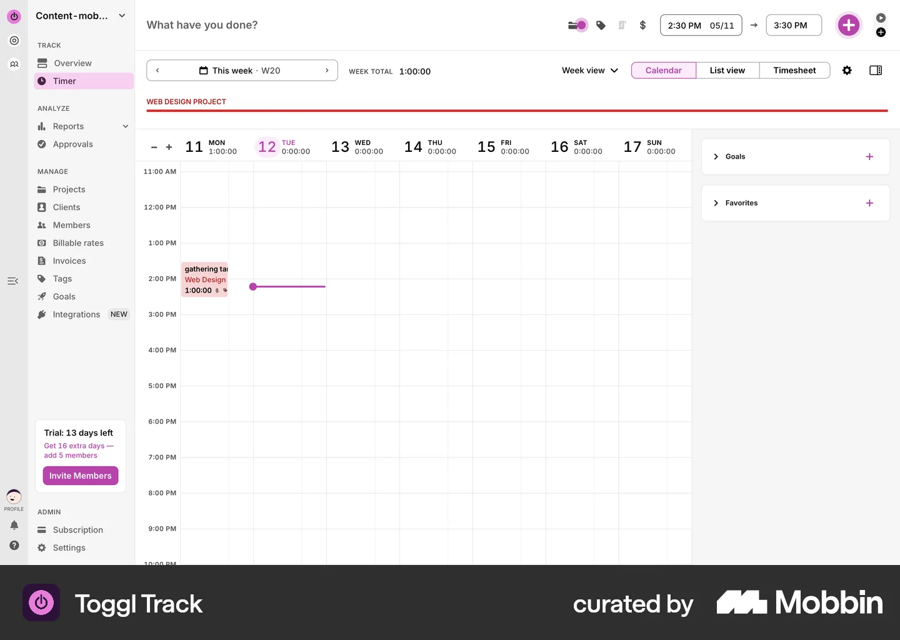
Projects overview
Entry point — sidebar navigation
Proposal
One complete user flow in four weeks. Async collaboration, focused deliverables, room to grow.
Overview
A focused, async four-week engagement to design one complete, shippable user flow — from research inputs to a high-fidelity prototype ready for development or user testing.
Delivery
Each week has a clear focus and deliverable. Once you complete the intake, we begin Week 1 within two business days.
Align & structure
Review intake, validate flow map, resolve open questions async.
Deliverable: Validated flow map, screen list, questions doc
Wireframes
Lo-fi wireframes for the full flow. You review and comment within 48h.
Deliverable: Wireframes for every step in the flow
UI & interaction
High-fidelity screens with key states: empty, loading, error, success.
Deliverable: Hi-fi screens + interactive prototype
Polish & handoff
Final refinements, annotated specs, and dev-ready export.
Deliverable: Prototype link, specs, flow doc, retainer roadmap
Intake
Before we start, you'll complete a short intake (~55 minutes total). Each step builds on the last — here's the sequence.
Product snapshot
Brief product description + full screen inventory tagged Must / Should / Later.
~15 min
Ideal customer profile
Describe the specific person who benefits most from the flow we're designing.
~10 min
Jobs to be done
List user outcomes and score importance with 10 points — only one can be level 3.
~15 min
Flow selection
Pick one user flow for the sprint — tied to your highest-priority job.
~5 min
Flow map
Step-by-step map from entry point to end goal. Actions, not screens.
~15 min
Constraints & assets
Brand files, platform, references, decision-maker, feedback SLA.
~10 min
Step 0
Tell us what you're building and list every screen the product will need — even ones outside this sprint.
The screen inventory gives us a complete product map upfront. We design one flow in the sprint, but nothing launch-critical gets missed when we plan later phases.
Example — Toggl Track
| Screen | Purpose | Priority | Exists? |
|---|---|---|---|
| Timer dashboard | Track time entries | Must | Yes |
| Projects list | Organize work by project | Must | Yes |
| Create project modal | Add a new project | Must | Yes |
| Invite teammates | Add team to project | Should | Yes |
| Reports | View time analytics | Should | Yes |
| Integrations | Connect third-party tools | Later | Partial |
Step 1
The specific person who gets the most value from the flow we're designing. One flow, one ICP.
Design decisions get tested against one real person, not a vague "users" group. Every screen serves their goal.
Example — Toggl Track (Creating a project flow)
Step 2
List the outcomes users hire your product for — not features. Distribute 10 points across jobs. Only one job can be level 3.
The point cap forces prioritization. The level-3 job becomes the anchor for flow selection — we design what matters most first.
Example — Toggl Track
| Job to be done | Score | Pain | Who |
|---|---|---|---|
| When I start client work, I want to organize time by project, so I can bill accurately | 3 | 5 | Freelancer / team lead |
| When I'm mid-task, I want to start a timer instantly, so I don't lose billable hours | 2 | 4 | Individual contributor |
| When the month ends, I want a time report, so I can invoice clients | 2 | 3 | Freelancer |
| When I hire someone, I want them on my workspace, so we track time together | 1 | 2 | Team admin |
Points used: 8 / 10 — one level-3 job selected.
Step 3
Pick one user flow for this sprint. It should map to your highest-priority job (level 3).
Example — Toggl Track
Step 4
Map the steps a user takes to reach one end goal. Actions and decisions — not screens. Max 12 steps.
Example — Toggl Track: Creating a project
End goal: Project created with team invited, ready to track time.
Step 5
Everything needed to design without back-and-forth. Skip what doesn't apply.
Collected once, upfront. Prevents mid-sprint delays waiting for brand files or platform decisions.
Example
Here's a real user flow from a shipped product — Toggl Track's "Creating a project" — to show what a sprint deliverable covers.
Reference flow from Mobbin

Projects overview
Entry point — sidebar navigation
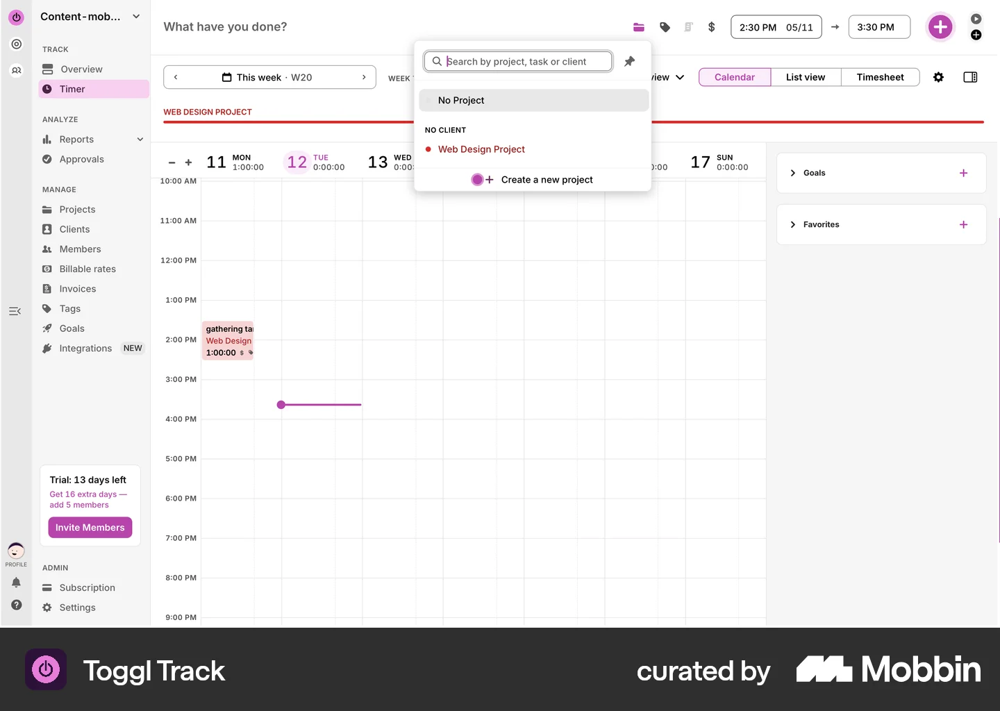
Navigate to Projects
User selects Projects section
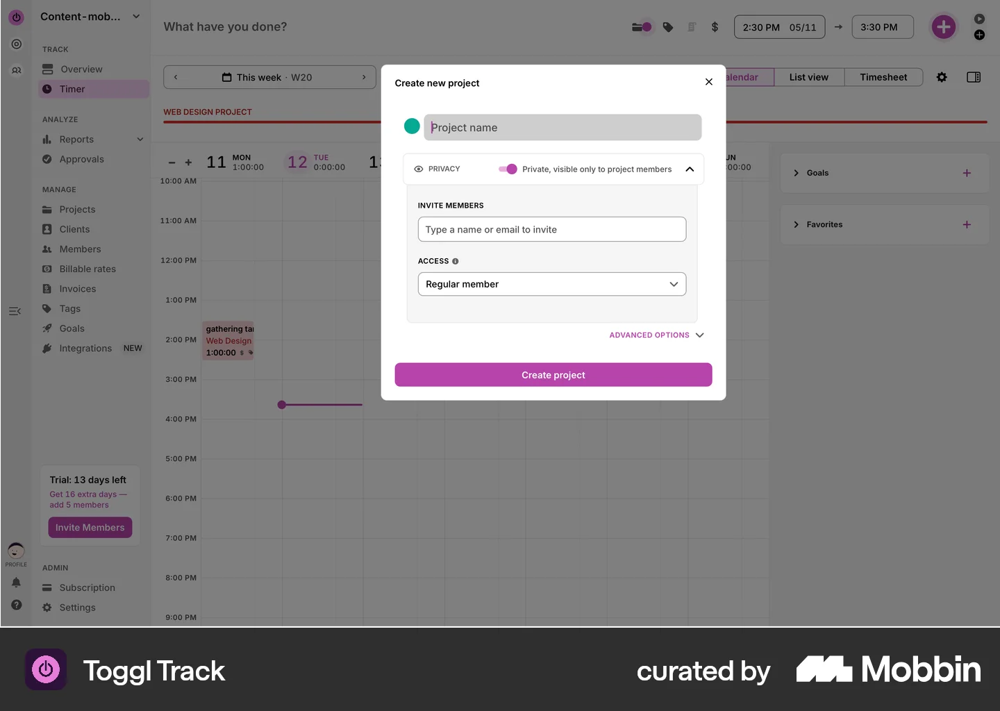
Click Create project
Triggers the creation flow
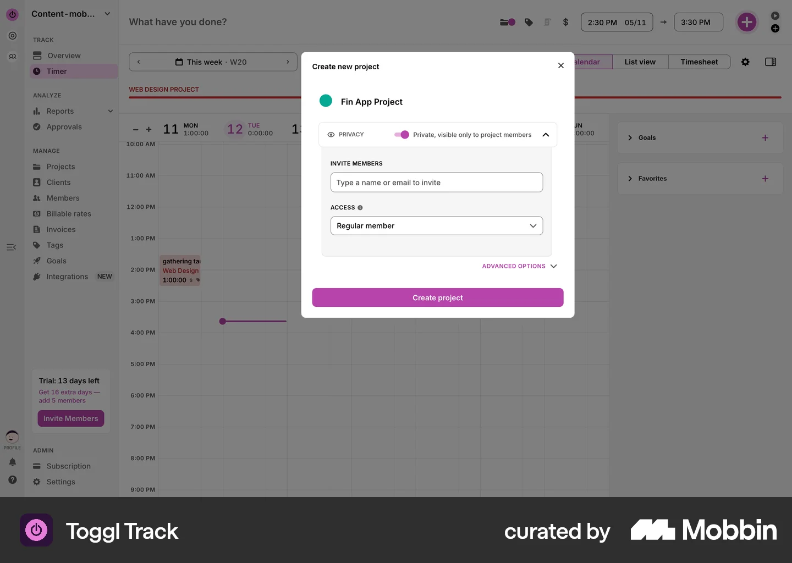
New project form — name
User enters project name
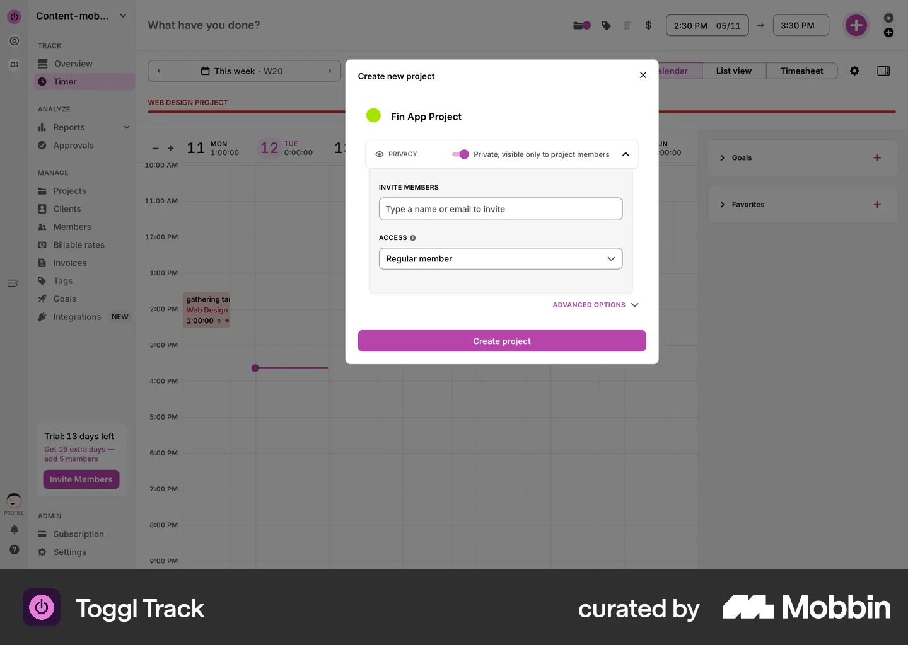
Add project details
Additional configuration fields
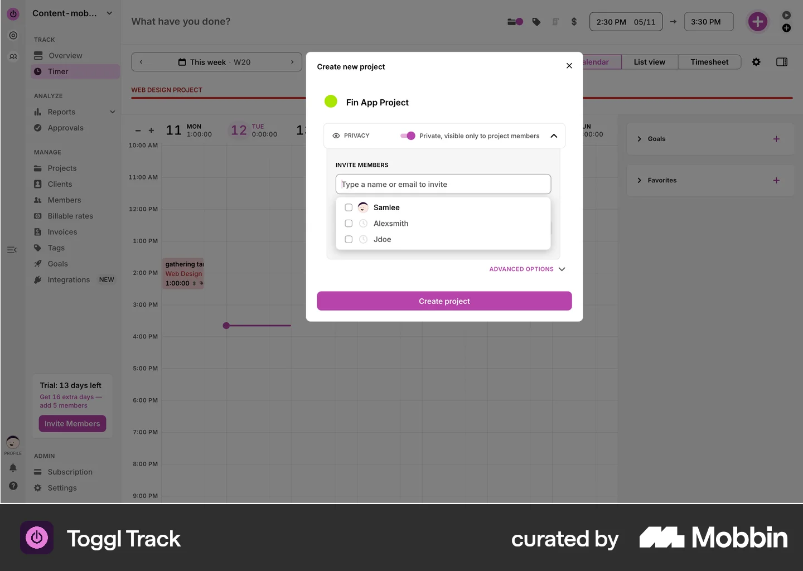
Select client
Assign to a client workspace
Set project color
Visual identification
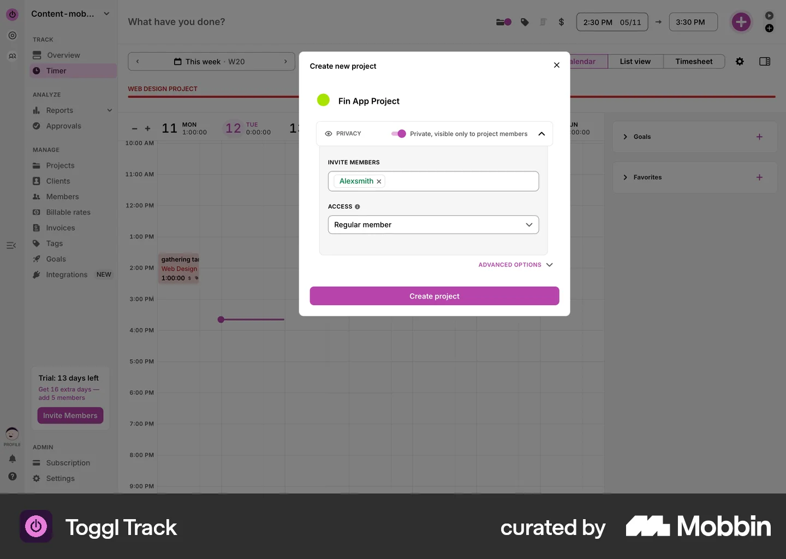
Configure billable settings
Rate and billing options
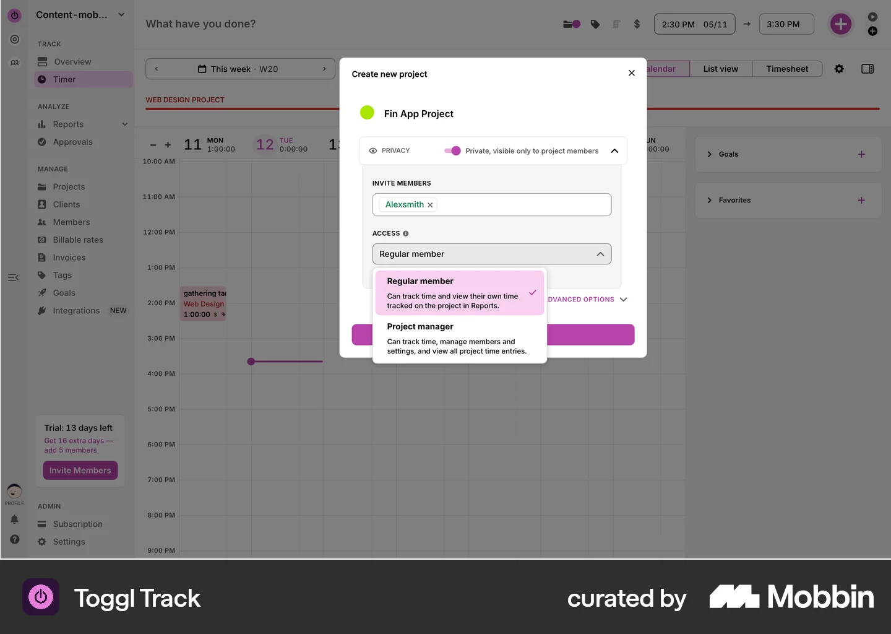
Project created — overview
Success state, project is live
Invite teammates prompt
Optional team onboarding
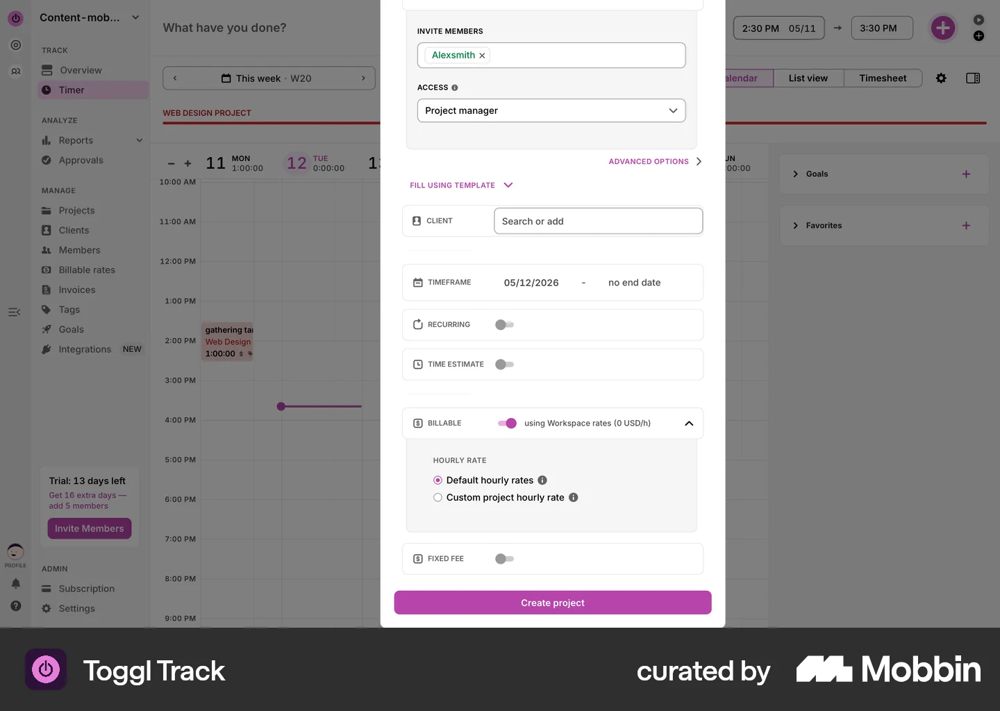
Invite by email
Enter team member addresses
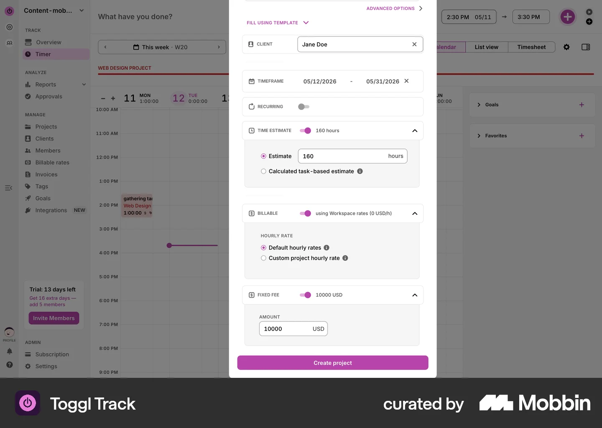
Invitation sent confirmation
Feedback that invites were sent
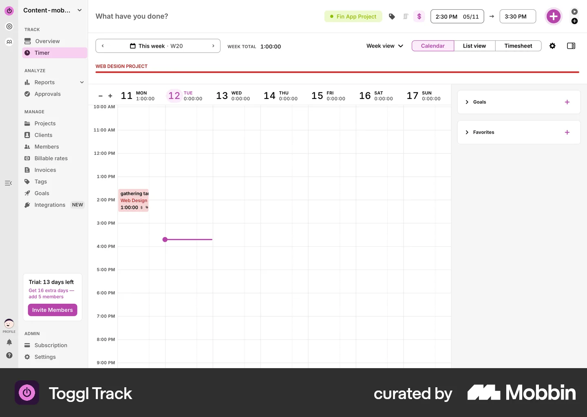
Project dashboard with team
End goal — ready to track time
Next steps
When you're ready to start, we'll send the intake form. It takes about 55 minutes to complete, and we begin Week 1 within two business days of receiving it.
Once your first flow is delivered, we plan the remaining flows together. Must screens outside the sprint stay documented — nothing gets lost — and we tackle them through a monthly engagement at a reduced rate per flow.
Example — Toggl Track backlog
After the sprint, continue with the tier that fits your pace. Prices anchor to the sprint — one flow equals one cycle.
1 flow / month
Same four-week cycle, rolling
$4,000 USD
2 flows / month
Parallel or staggered delivery
$7,000 USD
Design partner
Ongoing iteration on live flows + new ones
$6,000 USD